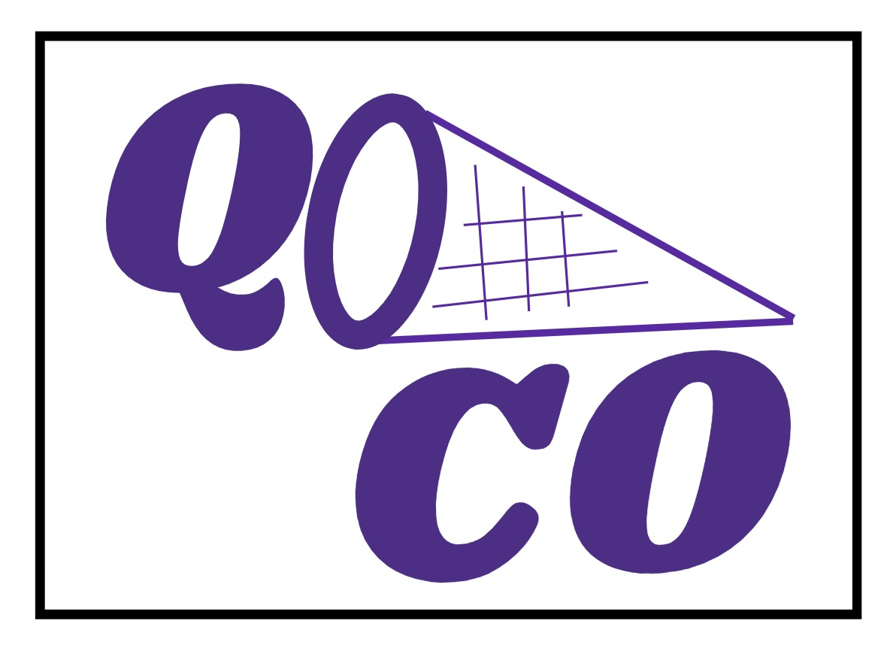

QOCO: Quadratic Objective Conic Optimizer
An open-source conic solver built for real-time, onboard use.
Overview
Onboard trajectory optimization needs predictable runtime and modest memory use on flight-grade processors. General-purpose solvers are rarely designed for those constraints.
QOCO is the lab's open-source solver for second-order cone programs with quadratic objectives. That problem class appears in many of the lab's trajectory optimization formulations. QOCO is written in C and has no external dependencies, which makes it easier to embed, certify, and run in real time.
QOCO is freely available and used in the lab's own flight and simulation pipelines.
Results & media
QOCO is software, so the page foregrounds the solver structure, custom-code path, and documentation instead of using generic imagery.
Embedded conic optimization
QOCO solves second-order cone programs with quadratic objectives. The companion generator produces custom C solvers for repeated problem families, using static memory and no external library stack.
- CorePrimal-dual interior point method written in C.
- ProblemQuadratic objective with nonnegative and second-order cone constraints.
- Use casePredictable solver behavior for onboard trajectory optimization.
